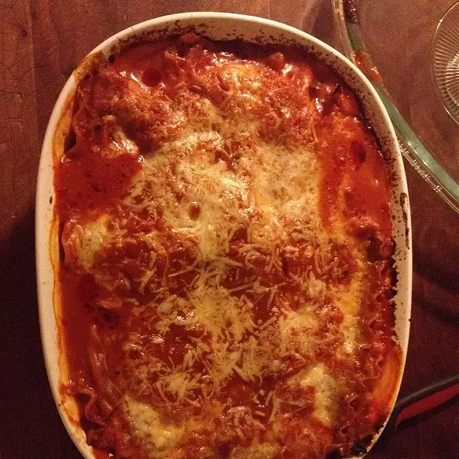

Back to main page
Lasagna Recipe

Description
Lasagna is a wide, flat sheet of pasta. Lasagna can refer to either the type of noodle or to the typical lasagna dish which is a dish made with several layers of lasagna sheets with sauce and other ingredients, such as meats and cheese, in between the lasagna noodles.
Information
Prep: 5 mins
Cook: 1 hr 5 mins
Total: 1 hr 10 mins
Servings: 6
Ingredients
- 1 (26 ounce) jar Traditional Italian Sauce
- 6 each uncooked lasagna noodles
- 1 (15 ounce) container ricotta cheese
- 2 cups shredded mozzarella cheese
- ¼ cup grated Parmesan cheese
Steps
- Spread about 1 cup pasta sauce in 2-quart shallow baking dish (11x7-inch). Top with 3 uncooked noodles, ricotta cheese, 1 cup mozzarella cheese, Parmesan cheese and 1 cup pasta sauce. Top with remaining 3 uncooked noodles and remaining pasta sauce. Cover.
- Bake at 375 degrees F for 1 hour Uncover and top with remaining mozzarella cheese. Let stand 5 minutes.
Back to top